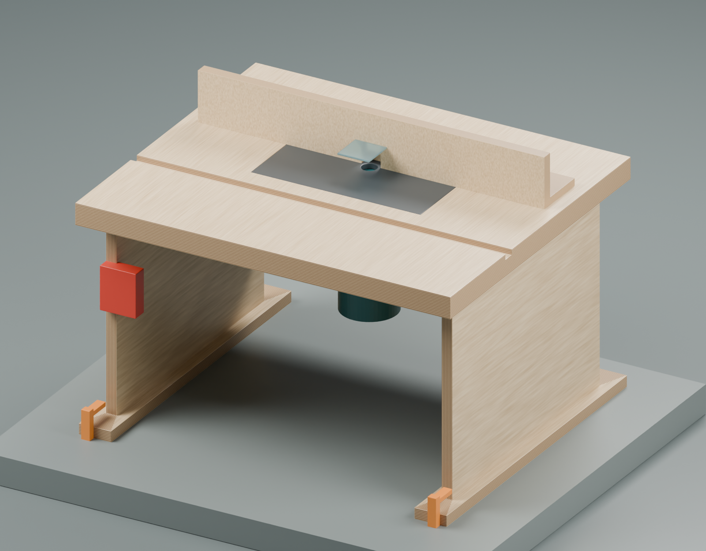
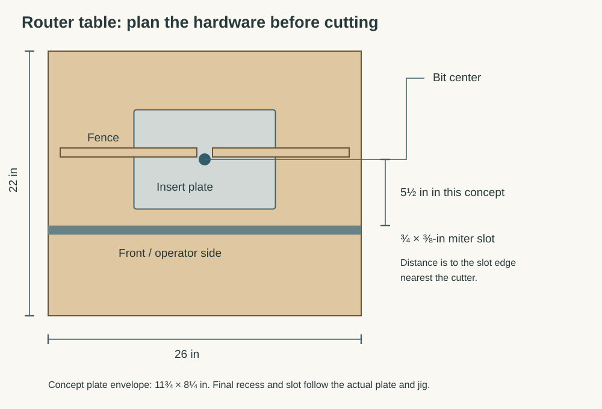
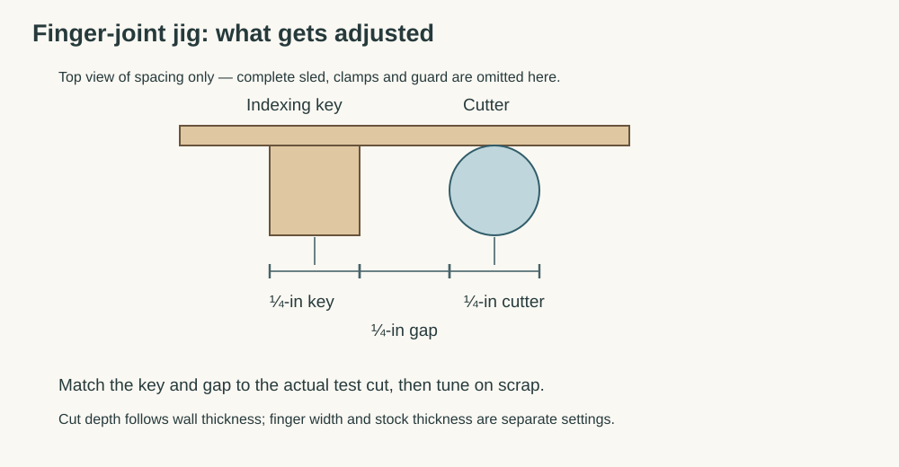

Optional router table and finger-joint setup
Open the illustrated version · Box build guide
For the travel Yahtzee box, the preferred corners have ¼-inch fingers in ¼-inch walls. A small benchtop table makes this repeatable and can serve future boxes. Plain butt joints are the simple option if setup time becomes the project.
This is a construction and commissioning guide for a shop-built table around purchased mounting hardware and a documented jig. Router mounting holes, plate recess, screw lengths, guard clearances, and table-slot location must be set from the actual hardware. The box model is not a drilling template for the table.

The model shows the arrangement of the main parts. The router is a generic size envelope, not a detailed replica of the Mastercraft. Mounting fasteners, fence locks, electrical leads and dust fittings follow the selected hardware; the render is not a complete operating setup. Editable concept: router_table.scad and router_table_concept.blend.
What is already available
The router is confirmed as Mastercraft 054-6821-2, with both bases and the ¼-inch collet adapter sleeve. Use the fixed base for table mounting. The manual specifies 25,000 RPM; choose cutters rated for that speed and install them using its collet-engagement instructions. The track saw, router, drill, clamps, square, and calipers cover the main table-building operations. See the manufacturer manual.
Buy versus build
| Build | Buy / select first |
|---|---|
| Flat supported tabletop and rigid bench-clamped base | Router-rated phenolic or aluminum insert plate, blank if necessary |
| Straight adjustable fence with replaceable faces | Plate leveling and retaining hardware; reducer ring suitable for small cutters |
| Fence dust box and hose support | Enclosed plug-in paddle switch, rated for the router's motor load and local supply |
| Auxiliary sacrificial backers and larger clamping carriers | ¼-inch cutting diameter straight or spiral bit for fingers |
| Optional finger-joint jig, if following a complete published plan | Small groove cutter, typically ⅛-inch cutting diameter, chosen for the actual lid |
| Documented finger-joint jig with stock clamping and cutter shielding; compatible miter track if required |
The confirmed adapter accepts ¼-inch-shank bits. Cutting diameter is a separate measurement. Neither an expensive lift nor a new router is necessary for the first version. A blank commercial plate avoids guessing another router's hole pattern; Rockler explains the plate options.
Table construction

Suggested envelope: about 26 × 22 inches, with a laminated top around 1½ inches thick and an open, braced base tall enough to clear the inverted router and allow comfortable access. These are starting dimensions, not a hardware-specific cut list. Check the actual router, mounting plate, and jig on a full-size layout before cutting the top.
- Select the plate and jig first. Put the plate, fence, slot, guard, and router controls on a full-size drawing. Preserve space for clamps, the dust hose, screw heads, and the jig's whole travel. The jig must not run over leveling screws or unsupported edges.
- Laminate and brace the top flat. Two nominal ¾-inch sheets are a practical starting point. Use a smooth wear surface, seal exposed MDF edges, and add support beneath the plate opening without blocking the motor. The opening weakens the top, so check it again with the router installed.
- Recess the plate using its actual template. Provide a continuous supporting ledge or the plate maker's specified support system, leveling points, and positive retention against lifting. Fit the plate flush across the whole perimeter; it must neither rock nor catch a sliding workpiece.
- Mount the fixed base through its intended mounting points. Use the correct machine-screw thread and engagement, with flush heads. Verify screw length against the base rather than copying another router's dimensions. Confirm the motor clamp, collet, and height adjustment remain accessible.
- Build a rigid, braced stand with bench-clamping surfaces. Clamp it to a solid bench for use. Leave ventilation and chip clearance around the router; do not enclose its cooling openings in a tight box.
- Add the switch without homemade mains wiring. Use a purpose-built, motor-rated plug-in unit mounted where it can be reached immediately. Test that it controls this router and that you can stop it without reaching beneath the top. Unplug the router before adjustments and cutter changes.
- Fit fence, guard, and extraction. The general fence should lock firmly at both ends, with coplanar replaceable faces and a small cutter opening. Use a transparent adjustable guard and dust pickup. The finger-joint sled has its own workholding and guarding requirements; the general fence does not replace them. WOOD's table overview shows these features together.
Finger-joint jig choice

For the shortest learning path, pair the handmade table with a documented commercial sled. The Rockler jig is one example, not a requirement or a verified local purchase recommendation. Its instructions call for a ¾ × ⅜-inch miter slot, with the edge nearest the cutter 4½–6¼ inches from the bit center. Fit the real jig before machining that slot; do not assume any table slot will work. Check current availability before building around it. Jig instructions, June 2025
A handmade indexing sled is also possible, but use a complete published design with a guided travel path, secure work clamping, sacrificial exit support, cutter shielding, and stops that prevent cutting into handles or hardware. An upright fence and a loose indexing peg are not a complete small-part jig.
The indexing geometry is simple: the key width matches the actual cut width, and the clear gap between key and cutter also matches that width. Thus nominal ¼-inch fingers have a nominal ½-inch center-to-center spacing. Runout, cutter size, key fit, and fence alignment all affect the result. The test joint decides the fit; a ruler setting alone does not. Rockler's joinery overview explains the indexing principle and accumulated spacing error.
Commission the table before machining the gift
- With power disconnected, check router mounting, motor lock, plate retention, level, cutter engagement, guard position, and jig travel. No clamp, screw, or backer fastener may enter the cutter's swept area.
- Clamp the table to the bench. Connect extraction, wear eye/hearing protection, and use dust protection appropriate to the work. Check the accessible stop switch before cutting.
- Make an ordinary controlled test cut with the appropriate fence/guard first. Stop if the table shifts, the plate moves, or the router height creeps.
- For small walls, use the jig's clamps and handles. Follow its feed path and stroke limits; do not improvise hand-held short parts beside an exposed bit. The current Rockler instructions specify one workpiece at a time.
Tune a finger joint on the actual stock
- Prepare several scraps with the same thickness and wall height as the chosen material. Mark bottom edge, inside face, and mating corners.
- Fit a fresh sacrificial backer. Set cutter projection above the jig's work-support surface to actual wall thickness plus a tiny finishing allowance. Jig-platform thickness counts: do not measure from the table surface if the work sits higher on a sled.
- Match the key and spacing to the cutter's measured test slot. Cut one marked scrap using the jig manufacturer's sequence, then the complementary scrap with the specified one-finger offset. Keep every bottom reference consistent.
- Test by hand. The joint should seat with light hand pressure and stay square. A joint needing hammering can split the thin fingers; a sloppy joint needs recalibration. Change one setting at a time and repeat on fresh scraps.
- Make a complete four-sided practice box. Check diagonals, both ends of each board, and front/back pattern orientation. Label the successful setup and retain its reference samples until the gift is assembled.
These procedural details are adapted from the jig's instructions; use the instructions supplied with the actual jig for its complete operating sequence.
Apply it to the Yahtzee box

Cut the fingers before the lid grooves, so an unsupported groove lip is not presented to the finger cutter. Use the same bottom reference on the lower front and full-height back. The front is three finger widths high; the back has a partial top finger. A generic instruction to center every pattern would misalign them.
For grooved walls, use the separate narrow cutter and a supported, clamped carrier with positive guide and travel stops. The target is about ⅛ inch deep, with slot width fitted to the actual finished ⅛-inch plywood lid. Stop before the back corner joints; remove the lid's rear corner tips to clear the rounded groove ends. Test a scrap first and leave the remaining wall and upper lip intact. Clearances in the CAD model are starting values, not a promise that nominal plywood, finish, and humidity will produce that exact fit.

Timing checkpoint
Allow a weekend for constructing and checking the table and a separate session for finger-joint practice; a first setup can take longer. Buy/select the plate, switch, and jig before allocating that weekend. Shipping and finish curing must fit the remaining calendar too.
Suggested decision date: December 1, 2026. If a full scrap box and a working groove/lid sample are not successful by then, switch to the butt-joint version. Keep the table as a useful shop project without making the gift depend on last-minute jig calibration.